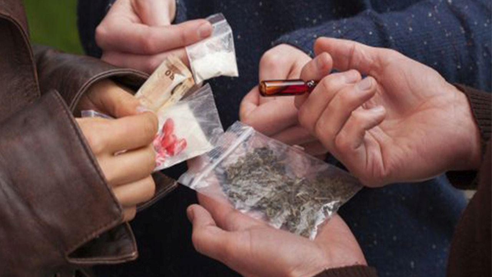

Psihoaktivne droge ili psihotropne supstance (cesto nazivani i narkotici) su kemijske tvari, izrazitog fizioloskog ucinka, koje mijenjaju mozdanu funkciju, sto rezultira s privremenom promjenom percepcije, raspolozenja, svijesti ili ponasanja.
Ovakve droge se cesto koriste u rekreativnoj zlouporabi i kao poticaj u spiritualne svrhe, kao i lijek, posebice u lijecenju neuroloskih i psihickih bolesti.
Mnoge od ovih supstanci, (posebice stimulansi i depresori) mogu stvarati naviku, sto rezultira fizickom ovisnoscu a to cesto vodi ZLOUPOTREBA droga.
